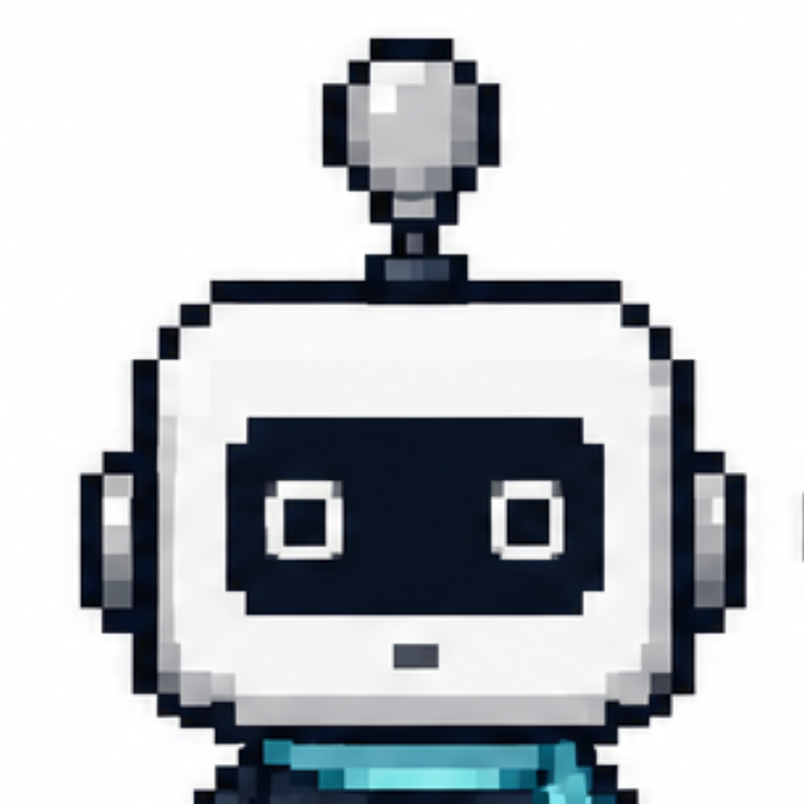

Write to us at inikita86@ukr.net. To help us answer faster, please include your device model, iOS version and, if it is about your progress, the email address you signed in with.
You pick a course, and LexiUp delivers a small set of words through notifications and the widget across your day. In the evening a short test checks what stuck. You do not have to sit in the app — the learning happens in the background while you go about your day.
Open the iOS Settings app → LexiUp → Notifications, and make sure they are allowed. Also check that Focus or Do Not Disturb is not filtering them out. All reminders are scheduled on your device, so they work without an internet connection.
Sign in with the same account you used before. Your progress is restored from the backup automatically the first time you sign in.
Open the app, go to Profile → LexiUp Premium and tap “Restore purchases”. Make sure you are signed in to the App Store with the same Apple Account used for the original purchase.
LexiUp Premium is a one-time purchase that removes all ads, unlocks unlimited review sessions and works fully offline. You can find it in Profile → LexiUp Premium.
Open the app and go to Profile → Delete account. This removes your account and all associated data. The action cannot be undone.
Yes — Profile → Schedule. You can also choose when during the day the words arrive, and set a different window for each weekday.